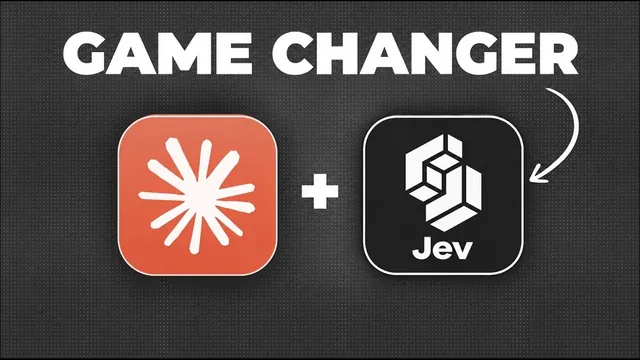

Jev로 클로드를 10배 쓰는 법

원본 영상 보기 →
- 분류·라우팅은 텍스트 생성이 아니다
- 저렴함이 새로운 활용 사례를 만든다
- Jev 단독이 아니라 Claude와 묶어야 진짜 힘이 나온다
한 줄 요약
ChatGPT 공동 창업자 중 한 명이 내놓은 새 AI 모델 'Jev'는 텍스트를 쓰는 대신 '결정'만 출력해서 일반 LLM보다 최대 200배 빠르고 400배 저렴하게 대량 분류·라우팅 작업을 처리하며, Claude와 묶어서 쓰면 리드 스코어링부터 이탈 예측, 브라우저 자동화까지 예전엔 비용 때문에 포기했던 자동화를 가능하게 만들어준다.
전체 내용 정리
Jev는 텍스트를 쓰지 않고 '결정'만 내리는 모델이다
Jev는 ChatGPT 공동 발명가 중 한 명이 출시한 새로운 유형의 AI 모델로, 속도는 일반 LLM보다 20~200배 빠르고 비용은 40~400배 저렴하며 출력 토큰은 무료다. 입력값은 일반 거대 언어 모델과 동일하지만, 인간과의 대화에 최적화된 텍스트 대신 오직 '결정'만 출력한다는 점이 근본적으로 다르다. 인간 피드백(RLHF)이 아니라 정교한 의사 결정을 위한 강화 학습으로 훈련됐기 때문에 의사 결정 속도와 비용에서 이런 격차가 난다. 출력 가능한 값은 예/아니오/null 중 하나이거나, 미리 정의해둔 선택지 중 하나를 고르는 다지선다형 분류뿐이며 텍스트 작성, 수학, 이미지 출력, 복잡한 추론은 할 수 없다. 그래서 대규모 데이터셋에서 분류나 라우팅 작업을 할 때 특히 유용하고, 글쓰기나 계산처럼 추론이 필요한 작업에는 쓸 수 없다.
Claude에 Jev를 연결하는 방법은 API 키 하나면 끝난다
사용법은 간단하다. typeset.ai 웹사이트에 무료로 가입해 로그인한 뒤 API 키를 생성하면 5달러가 무료로 제공되는데, 테스트해보기엔 충분한 금액이다. Claude에서 쓰고 싶다면 이 API 키와 Jev의 문서 페이지 링크를 함께 넣어주기만 하면 Claude가 Jev 사용법을 알아서 파악한다. 그다음엔 원하는 작업을 설명하기만 하면 되고, 어떤 방식(예/아니오형인지 다지선다형인지)을 쓸지는 Claude가 알아서 최적으로 설정해준다.
유튜브 댓글 1,400개 분류, Claude Opus 5와 비교하면 격차가 확연하다
첫 번째 활용 사례는 지난 1년간 자신의 유튜브 채널에 달린 모든 댓글을 분석해 긍정, 부정, 건설적인 피드백, 답변되지 않은 질문, 답변된 질문 다섯 가지로 분류하고 CSV 파일과 대시보드로 출력하는 작업이었다. 이때 "분류할 때 일반 LLM을 쓰지 말고 Jev만 쓰라"고 지시했다. 같은 프롬프트와 워크플로를 Claude Opus 5로 실행해봤을 때는 일부 댓글을 건너뛰면서도 총 1,400개 댓글을 분석하는 데 34분이 걸리고 23달러가 들었다. 신뢰성 면에서는 Jev가 Opus와 비슷한 수준이고 Sonnet보다는 낫다고 설명한다. 즉 대량 분류 작업에서는 속도와 비용 차이가 압도적이라는 것이다.
리드 250명 스코어링은 4초, 1센트면 끝나고 Claude와 결합하면 더 강력해진다
또 다른 명확한 활용 사례는 잠재 고객 자격 요건 확인과 점수 매기기다. 250명의 잠재 고객 리스트를 "의사 결정권자인가", "미국에 거주하는가" 같은 자격 기준과 점수 체계에 따라 채점해달라고 요청하자, Jev API 키와 문서 페이지만 제공했는데도 4초 만에 250명 전체를 채점하고 1센트의 비용으로 점수가 포함된 엑셀 시트를 받았다. 여기서 한 걸음 더 나가면, 대규모 리드 리스트를 Jev로 빠르고 저렴하게 점수를 매긴 다음 Jev가 자격이 있다고 판단한 리드에 대해서만 Claude로 추가 조사나 아웃리치 메시지 작성을 맡기는 식으로 두 모델을 같은 워크플로에 통합할 수 있다. 이렇게 반복되는 작업은 Claude에게 "이 프로세스를 기술(skill)로 만들어달라"고 요청하면 '제프로 리드 점수 매기기' 같은 재사용 가능한 기술로 패키징되고, 이후엔 이 기술을 실행할 때마다 자동으로 리드 점수를 매기게 된다.
이탈 위험 예측, 고객지원 라우팅, 통화 분류까지 — 저렴해서 새로 가능해진 일들
Jev는 분류 작업 자체가 워낙 저렴하기 때문에 예전엔 비용 때문에 시도하지 않았을 일들도 가능하게 만든다. 가입 후 경과일, 게시글 수, 마지막 로그인, 댓글 수, 참여한 미팅 횟수 같은 활동 데이터를 기반으로 지난달 신규 회원 203명의 이탈 위험도를 1~10점으로 채점하는 작업은 25초, 1센트에 끝났고 결과는 점수별로 색상까지 표시된 구글 시트로 받았다. 이 작업은 2주마다 자동으로 실행되는 기술과 예약 작업으로 만들어뒀다. 비슷한 방식으로 지난 1년간의 커뮤니티 게시물 1,300여 개를 커뮤니티 피드백, 기술 질문, 영업 질문, 비즈니스 질문, 소개, 성과 여섯 가지로 분류해 담당자(예: 기술 질문은 CTO)에게 연결하는 작업은 106초, 4센트에 끝났고, 227건의 고객 지원 통화 기록을 여섯 가지 범주로 분류하는 작업도 13초, 7센트로 끝나면서 두 경우 모두 Claude가 분류 결과를 바탕으로 대시보드까지 만들어줬다.
브라우저 자동화에서도 Jev는 속도를 뒤집는다
느리기로 유명한 브라우저 사용 자동화 영역에서도 Jev를 활용한 초고속 버전인 'Jev ultra fast'가 무료 GitHub 저장소로 공개돼 있는데, 이를 이용해 취리히에서 런던으로 가는 항공편을 7초 만에 예약하는 시연을 보여준다. 이 저장소를 쓰려면 Claude Code가 필요한데, 이를 이용해 자신의 유튜브 피드를 스캔하는 브라우저 에이전트를 만들었다. youtube.com을 열고 자기 계정의 AI 탭을 클릭한 뒤 5분간 피드를 스크롤하면서 화면마다 Jev로 "이 영상이 Claude 관련 영상인지"를 판단하게 하고, 맞으면 제목과 링크를 구글 시트에 추가하도록 지시한 것이다. 그 결과 5분 동안 443개 영상을 확인해 그중 Claude 관련 영상 99개를 저장했고 비용은 1센트에 불과했으며, 결과 시트에는 제목·채널·링크와 함께 실제로 Claude 영상일 확률 점수까지 담겨 있었다(확률 55%로 표시된 한 건은 실제로는 Claude와 무관한 영상이었다). 이 외에도 방문자 유형에 따라 실시간으로 웹사이트 H1 태그나 문구를 바꾸거나, 작업을 적절한 언어 모델로 즉시 라우팅하는 등 다른 사람들의 활용 사례도 소개된다.
핵심 인사이트
- 분류·라우팅은 텍스트 생성이 아니다: 대량의 예/아니오, 다지선다형 판단이 필요한 작업에 범용 LLM을 쓰면 속도와 비용 모두 손해를 본다는 것을 Opus 5와의 34분·23달러 대 초저비용 비교가 명확히 보여준다.
- 저렴함이 새로운 활용 사례를 만든다: 이탈 위험 예측이나 5분짜리 유튜브 피드 실시간 스캔처럼, 예전엔 비용 때문에 시도조차 안 했을 작업이 1센트대 비용 덕분에 실행 가능해진다.
- Jev 단독이 아니라 Claude와 묶어야 진짜 힘이 나온다: Jev로 대량 데이터를 걸러내고 Claude로 걸러진 대상만 심층 처리하는 조합, 그리고 이 워크플로 자체를 재사용 가능한 스킬과 예약 작업으로 만드는 것이 핵심 패턴이다.
오늘 당장 해볼 것
- typeset.ai에 무료로 가입해 API 키를 발급받고(5달러 무료 크레딧 제공), Claude에 이 키와 Jev 문서 페이지 링크를 함께 넣어 테스트 요청을 해본다.
- 반복적으로 발생하는 분류형 업무(문의 분류, 리뷰/댓글 감정 분류, 리드 자격 확인 중 하나)를 골라 Jev로 먼저 돌려보고 속도·비용·정확도를 확인한다.
- 결과가 만족스러우면 Claude에게 "이 분류 워크플로를 스킬로 만들고 주기적으로 자동 실행되도록 예약해달라"고 요청해 반복 작업을 완전히 자동화한다.